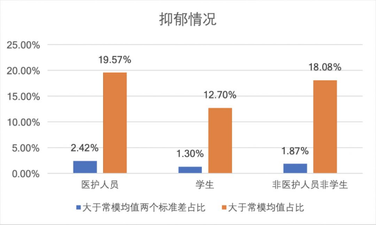

“抗疫”的第二战线：有人整晚睡不着，有人远程提供紧急心理包扎
原文链接 备份链接 2 月 6 日晚上，小晕又一次失眠了。 想隔绝开手机上应接不暇的信息与情绪，后半夜小晕几乎一直盯着天花板，等待天亮。 这已经是疫情发生以来，小晕第三次失眠。 辗转反侧到六点，小晕拨通了北师大疫情心理热线的 400 电 …

持续的疫情给很多人带来焦虑、担忧、害怕等情绪，先要坦诚面对，才能度过难关
***********杨立赟 韩舒淋 | 文***********
***********余乐 | 编辑***********

“我和妈妈的核酸检测结果出来了，都是阴性。但是依然担心检测那天会被交叉感染。我承认最近有点强迫症了，手一遍又一遍消毒，总觉得哪哪都不干净。总觉得自己发烧了，可是连着测了三次体温都不超过36.8℃。”一位武汉市民说：“再这样下去就算疫情结束了，一大批人也得出门去看心理医生了。”
身处天津的李典（化名），复工后中午出门吃饭，看到一家熟悉的餐厅防疫措施越来越严，所有人都必须在门口点餐。她回头看了一眼空旷的马路，一下子就哭了。“疫情解除后我想看看心理医生了。”
微博上有不少人表示，疫情结束之后，第一件事就是去找心理医生。一位网友说，“疫情过去后，心理医生诊室的门坎会被踏平。”
实际上，不用等到疫情结束，据不完全统计，目前全国已有上百家心理学会、医院、心理咨询公司已快速反应，通过免费热线电话、线上公益讲座等方式，向社会各界提供心理援助。他们中的大多数，在疫情爆发初期，就敏锐地预测到疫区一线人员和全国普通大众在特殊时期将承受的心理压力、可能出现的心理问题，从春节开始24小时轮值守着热线电话。
如果按每个平台平均每天接20个求助电话，每个电话持续30分钟计算，近一个月来，全国的心理从业者已经接到六万人次的求助和咨询，倾听了180万分钟的心声。
但是如果仅凭一腔“爱心”和“热血”而缺乏基本的专业性，易引发二次伤害，成了“帮倒忙”。西南大学心理学部临床与咨询心理学督导委员会主任杨发辉在接受《财经》记者采访时，回忆起2008年汶川地震时的场景，12年前的确存在这种“强行援助”的问题。
“当时我去了绵阳的九洲体育馆，是一个灾民安置点，几天时间里，有9支心理干预队到达，拉着灾民把故事讲了一遍又讲一遍，灾民心理上是不舒服的，会造成二次伤害。后来很多灾民在帐篷外挂了一个牌子——防火防盗防心理医生。”
此次疫情和过去几次大灾最大的不同点在于人和人之间必须尽量隔离，心理援助大多只能通过电话和网络。杨发辉对《财经》说，“心理援助队伍不会特别躁动地非要提供帮助，行业成熟度也确实高了很多。”
“心理服务中，我们不能把自己定义为助人者，不能因为我的怜悯和焦虑，强行打开对方的痛处。”杨发辉说，政府机构已经为武汉的一线医护人员配备了心理专家，他也对接了几位医护。“我不会主动去找他们，不要成为一种负担；而是告诉他们有这样一个人在这里，当他们需要的时候，背后有一种助力，他们拥有选择的权利和空间。”
为李文亮的同事们做一次心理辅导
2月12日，中国心理学会、中国社会心理学会、中国心理卫生协会联合发布《新型冠状病毒肺炎疫情防控期间网络心理援助服务指南》；国务院应对新型冠状病毒感染的肺炎疫情联防联控工作机制在1月27日、2月2日、2月7日先后下发相关文件，指导各地有序开展疫情社会心理服务工作。
国务院应对新型冠状病毒感染的肺炎疫情联防联控工作机制，在1月27日印发《新型冠状病毒感染的肺炎疫情紧急心理危机干预指导原则》，其中将疫情影响人群分为四级。重点干预的第一级人群就是一线医护人员、疾控人员和管理人员，以及确诊患者。
“武汉中心医院的李文亮医生去世后，他的同事们需要忍着悲痛，继续奋战在一线。我们的老师通过腾讯会议平台，为武汉中心医院的200多位医护人员做了一次团体心理辅导。”武汉理工大学心理健康与生涯规划教育研究所所长雷五明接受《财经》采访时提及这场团体辅导的流程，第一个环节是追思李文亮医生，医护们谈起自己和李文亮的交集，倾吐内心的感受，宣泄负面情绪；既然引导大家认识到，真正造成李文亮之死的是病毒，最终引导医护人员继承李文亮的遗志，继续履行职责。“鼓励分享和倾诉是有作用的，当一个人得知大家都一样恐惧时，他就会觉得稍微轻松一些。”
雷五明说，此次疫情中，医护人员就是战士，面对最大的感染风险，无法逃避。有很多不是感染科的医护被抽调到一线，既要快速学习，又要高强度工作，回家之后洗澡、消毒要花两个小时，他们对家人感到愧疚。“遇到这类人员，就要多听他倾诉，不要再谈疫情。我们就像一个垃圾桶，他倒什么我都接住。”
湖北华夏心理机构接到的案例中，也有医护人员表达对于染病的恐惧。“疫情爆发的初期，医院的防护物资短缺，医护人员很焦虑。病人不能被及时收治时，他们要承受病人发泄的情绪压力。”该机构创始人、国家二级心理咨询师姜辣对《财经》记者说，“每次目睹病患死亡，医护人员的内心都感到无助、无力，有时甚至失眠，或者睡醒时会哭泣。”
湖北华夏心理从1月26日开通在线心理援助平台至今，一共接到近200个求助电话，大多来自武汉市。
在杨发辉接触到的个案中，有医生因感染新冠病毒而自责。“（医生）一开始很沮丧，看到别的同事在一线忙碌，自己却染病被隔离治疗，还导致她的亲友全部被隔离观察，感到自责、内疚。”幸而这名医生是轻症患者，在杨发辉的引导，她意识到可以利用这段治疗的时间，做一些自己平时想做而没有时间做的事，比如跳舞。
从2月3日至2月14日，杨发辉和西南大学心理学部副教授郭磊一起组织在全国31个省市自治区开展对公众心理状况的调研，共调研1.4万余人。
调研结果显示，抗击疫情一线的医护人员群体和其他公众群体表现出大致相同的心理健康状况，但面对病毒和死亡，医护人员群体的抑郁、焦虑和恐惧情绪都最为严重。按地区划分，武汉地区的抑郁、焦虑、恐惧、急性应激障碍、自杀倾向这几个维度均高于全国。



（西南大学心理学部的调研显示，医护人员群体的抑郁、焦虑和恐惧情绪最为严重。制图／西南大学心理学部）
杨发辉告诉《财经》记者，这份调研报告已经提供给了教育部、国家卫健委，希望对于武汉一线人员的心理援助有所帮助。“国家已经派遣一部分心理专家去。更重要的，是给武汉当地心理平台做一些专业督导。”
为逝者补办一场网上追思会
由于新冠病毒的传染性，很多遗属不能为逝去的亲人办一场追悼会，留下难以排解的遗憾。“病人死亡后马上被包裹起来，送去殡仪馆火化。有些人见不到亲人的遗体，也不能办追悼会，领回来的就是一个骨灰盒。”雷五明对《财经》记者说，“很多人心理上接受不了。”
近日，他为一个在疫情中失去亲人的家庭办了一场“网上追思会”。由于心理行业伦理规范，所有接受采访的心理学专家都不可以透露太过详细的个案信息。雷五明将事件概括道：“一个耄耋之年的老人，出现感染新冠病毒的症状时，害怕去医院，一直拖着，后来去了医院住院果然确诊了，没多久就去世了。家人对这件事的心情很复杂，既有悲伤，也有愤怒，抱怨医院不近人情、相关部门的管理不科学，不能让他们见（死者）最后一面。”
雷五明接到这个案例后，决定进行“哀伤辅导”——在微信群里，为死者的十几位家属组织了50分钟的“追思会”，让所有人通过语音的方式倾吐心声。死者遗孀哭喊：“唉！老头子，你留下来的寿我帮你活，我一定要帮你看着孙儿娶媳妇再来与你相会！”
从大年初二（1月26日）开始，身在武汉的雷五明，在封闭居家期间，搭建起“繁花与共”武汉心师之家心理援助服务站，其后又帮助共青团咸宁市委、湖北省残联等机构搭建心理援助平台。
他曾经陪一个治愈出院的患者哭了一场。“他出院后一时间还不能回家，社区把他从医院接到宾馆。那段时间武汉所有人忙得焦头烂额，他在宾馆没人理，又冷又饿又孤独。他给我打电话哭，我听着很心酸，也陪着哭。我不认为哭是丢人的事，这时候不要讲什么心理学派。”雷五明说，心理援助不等于心理咨询和心理治疗，疫情期间，社会支持是最大的心理援助，爱心是心理援助者最大的资本。
患者家属一边着急害怕，一边不敢说害怕。一些家属在患者前控制不住情绪而哭泣，同时又担心是否对患者造成压力。心理咨询师方一（化名）告诉《财经》记者，不必纠结于“难过的情绪是不好的情绪”，家属的哭泣，其实是在患者面前坦诚地展示和承认此刻的情绪，下一步可以询问对方的情绪状况。这样的动作对于患者来说是一种情绪陪伴，如果大家都能表达此刻的压力，便达成一种沟通，而不是各自难过和压抑。“并非只有乐观的情绪才是该有的情绪，让对方看到你的焦虑、担忧、害怕，也是在帮助他度过灾难。”
此次疫情也波及到社会大众的情绪，哪怕没有和病毒发生任何直接关联，普通民众长时间在家，也会出现情绪困扰。
“我撑到疫情结束估计也要去看心理医生了，每天惶惶不可终日，一有点头疼肩酸腰痛胸闷就觉的得了病，拿张纸写上家里所有能吃的东西，每天吃一点然后销帐，量无数次体温，晩上觉也睡不大好。”一名网友在微博上哀叹：“这样的日子什么时候才能到头。”
也有人因为忘记把快递拆封、直接搬进卧室而不断自责：“我真的被折腾疯了，可能也没病毒，但现在就是感觉满屋子里飘着病毒，嗓子也难受，疫情结束我也该看心理医生了。”
“哪怕与朋友晒晒厨艺，都是有好处的。”方一从一月底开始通过热线电话提供心理援助，接到的大多是来自普通民众的求助，即便是在湖北疫区之外，焦虑、失眠也很常见。她对《财经》记者说，对大众而言，有一个正常的生活状态更重要，而并非只关注心理疗愈，或者一直把注意力集中在“不焦虑”上。居家人群需要尽可能多运动，多与社群联系，保证正常生活状态。
但是普通民众可能会自己搜索相关的知识自我诊断，在本身比较焦虑的心态下，根据网上一些心理疾病的特征去对应自己的情况，很容易过度放大问题。就好比一个刚开始实习的医生，掌握了一些医学知识，就会频繁自我诊断是否患上了一些疾病。方一建议，尽可能交由专业的心理咨询师处理，以免自己误判。
一直刷手机、生活作息无序，人们会感到被架空、对身体健康过度关注，甚至引起死亡焦虑。“居家隔离，给家庭带来了各种冲击，大家需要重新适应和面对挑战。有的人在家感到身体不适，怀疑自己也感染了新冠病毒（实际并未感染），由于这种焦虑情绪而和家人发生矛盾。”杨发辉说，心理专家要耐心倾听，待求助者充分地表达之后，再讨论“去做点什么，找回掌控感”，把“危”变成“机”，对认识自己的生活和认识家人都是一个机会。
西南大学心理学部从1月28日开始，也开通了心理热线，共有30多名临床与咨询方向和老师和心理学相关的研究生参与，至今共接到约300个求助电话。
心理援助也需要“一盘棋”思维
《财经》记者采访的几位心理学专家均表示，目前暂时没有接收到由于多名亲人患病去世而引发的严重心理危机个案。“当一个人沉浸在极端的哀伤中，不一定有行动力去打电话求助。”杨发辉说，中国文化中的泛家族主义会起到作用，通常来说这类遗属会得到大家族亲友的照顾。
值得注意的是，最需要的心理援助可能不在当下。心理学专家表示，对于新冠肺炎死者的家属而言，端午节、中秋节、下一个春节，都是难以面对的日子；目睹同事牺牲的一线医护人员，产生的心理问题是滞后的，内心的创伤可能会持续数年。对这些特殊人群的心理援助和心理治疗需做长期规划。
湖北华夏心理机构已经把针对此次疫情的心理援助工作规划到了2021年2月，将持续一整年。雷五明也将在教学和日常工作中，加入新冠疫情的相关内容，“疫情的影响会有一个余波，就像钱江潮在八月十五到达顶峰，之后还会持续一段时间。”
另一方面，雷五明强调，心理援助要有边界，不要大包大揽，咨询师不能有救世主情结。心理援助平台需要和当地的防疫指挥部、社会组织建立一个联动机制。“很多问题不是心理援助和心理治疗能解决的，后期解禁之后，社工需要参与进来，对受到疫情打击的人，面对面地陪伴、帮他们办一些事，解决实际困难。”
姜辣认为，心理援助也需要“一盘棋”的工作思路，而不是各自为政。比如新冠肺炎遗属心理创伤的哀伤辅导，需要多方协同合作。“我们和武汉市武昌区妇联组建了专门应对肺炎疫情的心理服务团队，配合区妇联的整体部署。未来可能把热线公布给武昌区的方舱医院和隔离点。”且服务范围也在不断拓宽，发稿前，姜辣补充道，在准备实施青山区特殊人群的心理援助工作。由于对接的工作量非常大，她常常忙到半夜才能回复采访。
从非典、汶川地震到新冠肺炎，中国的心理服务行业在专业性和管理的科学性方面已经取得明显进步，但依然存在一定的管理和行业规范问题。“中国心理学会等专业机构制定的伦理规范，在实际开展工作时，是靠自觉，并非强制，参与心理援助的人员也没有非常统一的准入和考核标准。”姜辣说，在这些方面，还有待加强。
作者为《财经》记者
欢迎交流

杨立赟
微信：yang2005819

韩舒淋
微信：frodo-7
加微信请注明姓名、公司、职位


责编 | 蒋丽 lijiang@caijing.com.cn

原文链接 备份链接 2 月 6 日晚上，小晕又一次失眠了。 想隔绝开手机上应接不暇的信息与情绪，后半夜小晕几乎一直盯着天花板，等待天亮。 这已经是疫情发生以来，小晕第三次失眠。 辗转反侧到六点，小晕拨通了北师大疫情心理热线的 400 电 …
原文链接 备份链接 记者/郭慧敏 编辑/石爱华 宋建华 **心理咨询师在接听咨询电话 ** 截至2月5日上午，全国新型冠状病毒肺炎确诊人数已达23696例，死亡491例，治愈859例。 1月23日，武汉关闭离汉通道后，一条24小时心理咨询 …
原文链接 备份链接 凤凰新闻客户端 凤凰网在人间工作室出品 我是一名普通心理咨询师，在武汉有一家心理工作室。我也是一名心理工作志愿者，长期服务于武汉一家三甲医院的危机干预热线工作组。1月24日，大年除夕，工作组取消休假，恢复接听，30几位 …
原文链接 备份链接 设在新冠肺炎定点医院里心理咨询室。 记者：杨舒鸿吉 “ 在疫情高度紧张的时候，如何在保证自身安全的前提下，以最有效的办法进行心理干预，此前并无经验可循。能不能行得通，全靠自己摸索。 ” 新冠肺炎疫情在湖北省爆发之后，身 …
原文链接 备份链接 除了菜品的装卸、运送外，我还要负责为各个医院不同的人群制定不同的菜谱。比如，护士群体需要增加抗疲劳的食材，专家组的菜品可略微清淡，而建筑工人的菜单，则需要大油大荤。 口述 | 石在余 整理 | 刘朝晖 昨晚到今天，我 …